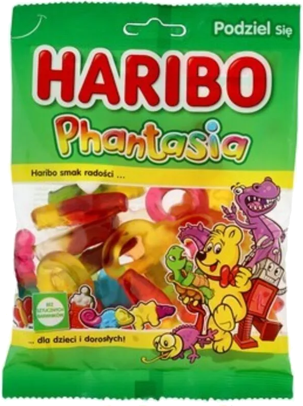
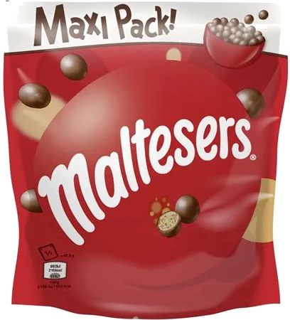
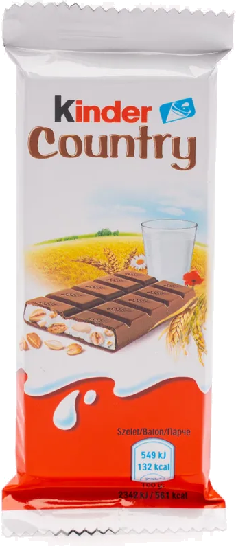
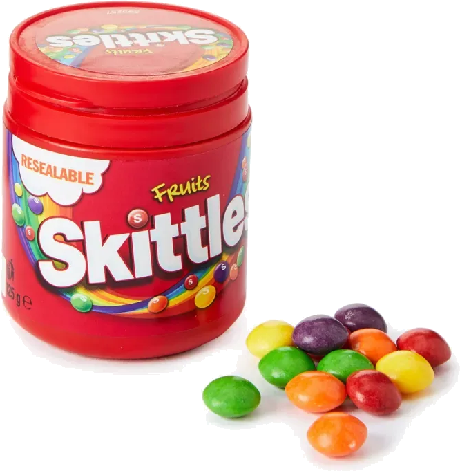

Владельцу — свой каталог
Витрина одного магазина с его ассортиментом. Обновлять цены и доступность сможет сотрудник.
Для локального магазина
Покупатель сам выбирает товары в каталоге. Сотрудник получает готовую заявку с составом заказа и контактами.
Открыть пример каталогаСамовывоз и оплата при получении. Всё начинается с выбора.

Что попробуем сегодня?У небольшого магазина уже есть товары и покупатели. Но в Telegram ассортимент разбросан по публикациям, цены устаревают, а каждый заказ приходится собирать в переписке.
«На полке» собирает каталог и заявки на одном сайте. Владелец получает способ принимать заказы онлайн, сотрудник обновляет товары, покупатель видит выбор до визита в магазин.
Витрина одного магазина с его ассортиментом. Обновлять цены и доступность сможет сотрудник.
Фото, описание, фасовка и цена рядом. Можно заранее собрать покупку и забрать её после подтверждения магазина.
Товары, количество и контакты в одном месте. Остаётся подтвердить наличие и согласовать самовывоз.
Так может выглядеть каталог вашего магазина.
Выберите категорию и откройте описание товара.
Фруктовый мармелад разных форм. Небольшой пакет для сладкой паузы или вечера с друзьями.
Знакомая газировка со вкусом белого персика. Для тех, кому хочется попробовать что-то за пределами привычного апельсина.
Молочный шоколад с кусочками печенья Oreo. Большая плитка, которой удобно поделиться за чашкой чая.

Шоколадные шарики с хрустящей начинкой в большой упаковке. Хорошая компания для домашнего киносеанса.

Молочный шоколад, нежная начинка и злаки. Небольшой формат, который удобно взять с собой.

Яркое фруктовое драже в баночке. Несколько разных вкусов в одной упаковке.
Пример интерфейса. Цены и характеристики демонстрационные; заказы на этой странице не принимаются.
Примеры будущего рабочего экрана сотрудника.
Доступ к товарам и заявкам — после входа.
300 мл · 249 ₽
Нет в наличииСотрудник меняет цену, описание и наличие. Недоступный товар остаётся в каталоге с отметкой, добавить его в корзину нельзя. Ненужные позиции можно убрать в архив.
Самовывоз · Оплата при получении
Имя и телефон покупателя — в заявке
Сотрудник видит товары, количество и контакты. Он подтверждает наличие и договаривается о времени получения. Отправка заявки сама по себе не резервирует товары.
Так будет устроен заказ в приложении. Без обязательной регистрации: достаточно имени и телефона для связи.
Посмотреть пример каталогаНайдите знакомое название или исследуйте категории. Откройте карточку и прочитайте описание.
Добавьте то, что понравилось, измените количество и проверьте итоговую сумму.
Укажите имя и телефон, получите номер заказа. Дождитесь подтверждения наличия от сотрудника, затем заберите и оплатите покупку в магазине.
Ещё немного о проекте
Локальному магазину, который продаёт офлайн и хочет принимать заявки через сайт. Покупатели смогут выбирать заранее, а сотрудники — обновлять ассортимент и работать с заказами. Сладости здесь служат примером; первая версия рассчитана на один магазин.
Это презентационная страница учебного проекта. Категории и описания можно попробовать, а экраны сотрудника показаны как макеты. Реальные заказы здесь не принимаются, контактные данные не собираются.
Каталог с поиском, карточки товаров, корзина и заявки на самовывоз. Сотрудник после входа сможет добавлять и редактировать товары, менять доступность, архивировать позиции и просматривать заказы. Оплата — при получении; доставка, онлайн-оплата и автоматический складской учёт в первую версию не входят.
На полке